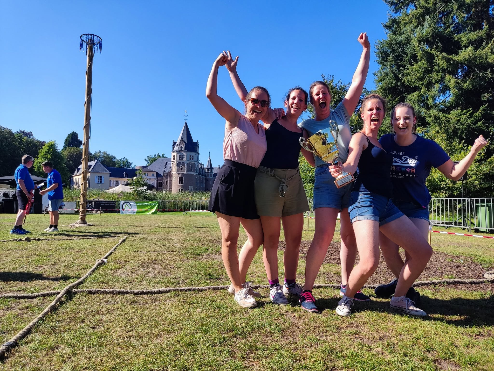
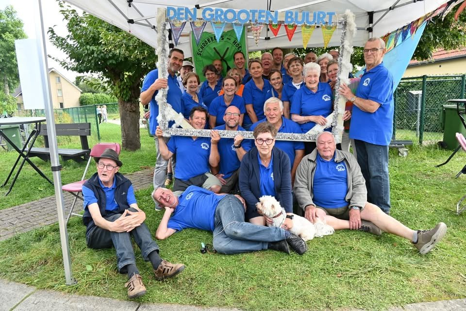
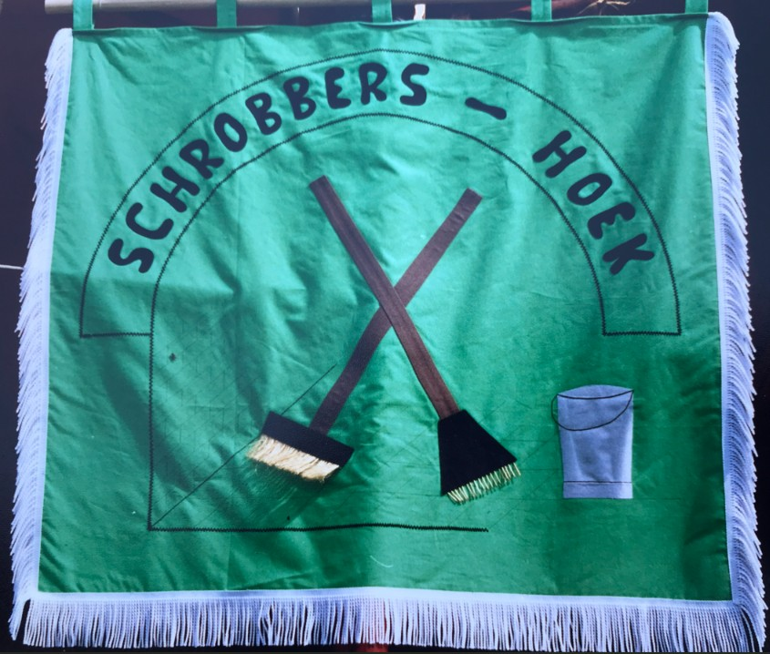

Zondag 16 augustus 14u00
Volksspelen Schrobbershoek
Traditie sinds jaar en dag: op de zondag na de kermis trekt heel Oostmalle naar de feestweide voor een namiddag volksspelen, voor jong en oud.
Lees meer
Eén van de oudste werkende gebuurtes van Malle — bekend van de volksspelen aan het kasteel en spek met eieren bij den Oostmalse Gordel.
Een overzicht van onze vaste jaarlijkse activiteiten. Klik door voor meer info.

Traditie sinds jaar en dag: op de zondag na de kermis trekt heel Oostmalle naar de feestweide voor een namiddag volksspelen, voor jong en oud.
Lees meer.jpg)
Wij verzorgen traditiegetrouw de eerste stop van de Gordel met een stevig bord spek met eieren. Een vaste waarde voor fietsers uit de hele streek.
Lees meer
Het gebuurt bestaat uit de Lierselei en haar zijstraten. Ontdek de werking van de Oostmalse gebuurtes en hoe wij samen de buurt levendig houden.
Lees meer